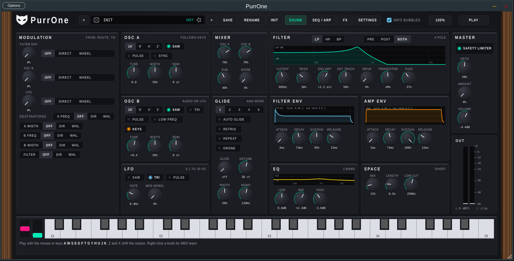

PurrOne
A free, open source mono synth in the style of the Pro-One, as VST3 and standalone. Part of the Studio 87 cat suite.

Try it in the browser
The interactive mockup: play it with the mouse or keyboard, browse the sounds, turn the knobs.
Open the mockupWhat is in it
- 431 factory sounds in banks A to D, plus four user banks (E to H)
- Preset browser with bank selection, search, type filters, favourites and history
- Unison with 1 to 5 voices, Detune, stereo Width and a Mono knob that keeps the low end centred
- Built-in FX: crush, EQ, reverb, OTT, stereo and a limiter, with a live spectrum and scope